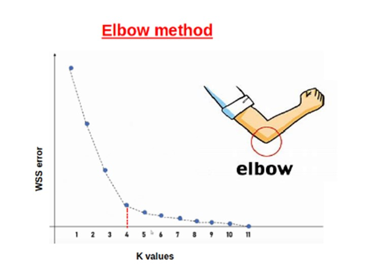
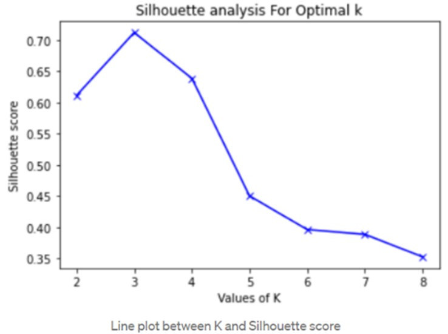
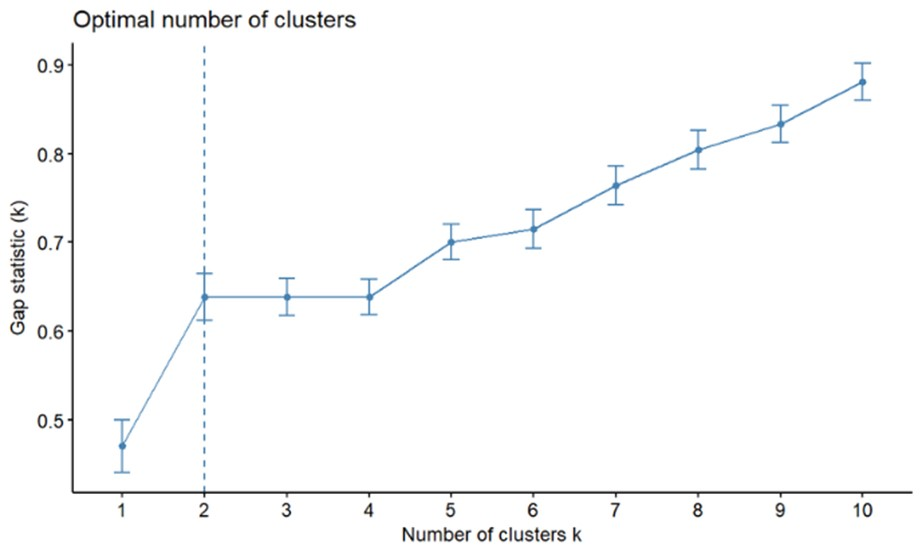

Methods for determining the optimal number of clusters
Determining the optimal number of clusters in hierarchical clustering can be a challenging task because hierarchical clustering produces a tree-like structure (dendrogram) that does not inherently provide a clear-cut answer about the number of clusters. However, there are several methods and techniques that can help you decide on the appropriate number of clusters:
1. Elbow Method: The elbow method is a simple and intuitive way to find the optimal number of clusters. It involves plotting the sum of squared distances (SSD) of each data point to its closest cluster center against the number of clusters. The SSD measures how compact each cluster is, and the lower the SSD, the better. The optimal number of clusters is where the SSD curve bends or forms an elbow, indicating that adding more clusters does not significantly reduce the SSD.

2. Silhouette Score: The silhouette method is another way to evaluate the quality of clustering. It measures how well each data point fits within its cluster and how far it is from other clusters. The silhouette score ranges from -1 to 1, where 1 means the data point is very close to its own cluster and far from other clusters, and -1 means the opposite. The average silhouette score of all data points indicates how well the data is clustered. The optimal number of clusters is where the average silhouette score is the highest.

3. Gap Statistics: The gap statistic method is a more sophisticated way to find the optimal number of clusters. It compares the SSD of the actual data with the SSD of a reference data set that has no inherent clustering structure. The reference data set can be generated by sampling from a uniform distribution or bootstrapping from the original data. The gap statistic is the difference between the log SSD of the reference data and the log SSD of the actual data. The optimal number of clusters is where the gap statistic is the largest.

The choice of method can depend on your specific dataset, problem, and goals. It's often a good practice to combine multiple methods to make a more informed decision about the optimal number of clusters in hierarchical clustering. Additionally, domain knowledge and the practical applicability of the clustering solution should also be considered when making this determination.